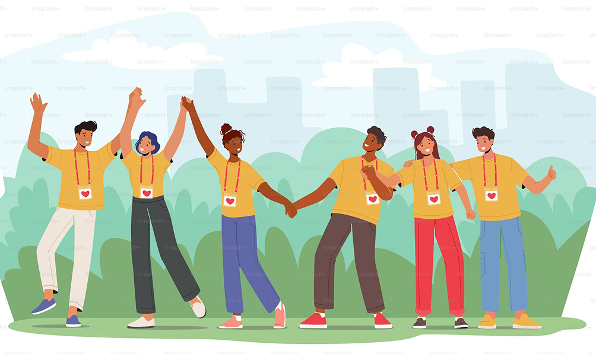

At Africare, we are dedicated to improving lives and fostering sustainable development across the African continent. Founded on the principles of empowerment, compassion, and innovation, Africare works to address critical challenges in health, education, and economic opportunity. With over [insert years] of experience, we have partnered with communities to create lasting change, focusing on locally-driven solutions that respect and celebrate Africa's rich cultural diversity. Our projects range from improving access to clean water and healthcare to supporting agricultural initiatives that ensure food security and environmental sustainability. Africare’s approach is holistic: we collaborate with local leaders, governments, and global partners to ensure that our efforts are impactful and enduring. Every step of the way, we prioritize transparency, accountability, and the empowerment of the people we serve. Together with our supporters, we are building a brighter, more equitable future for Africa. At Africare, we believe that when communities thrive, the world prospers.
Our company
